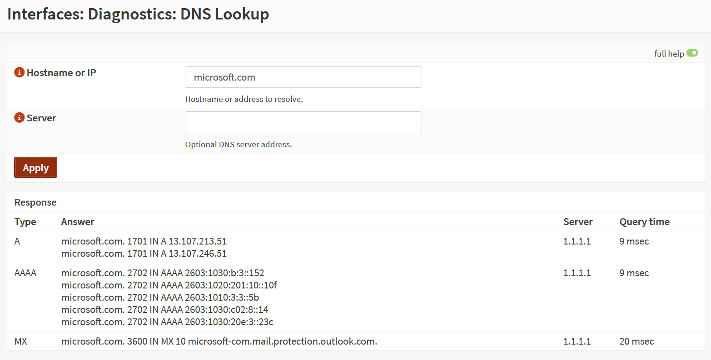
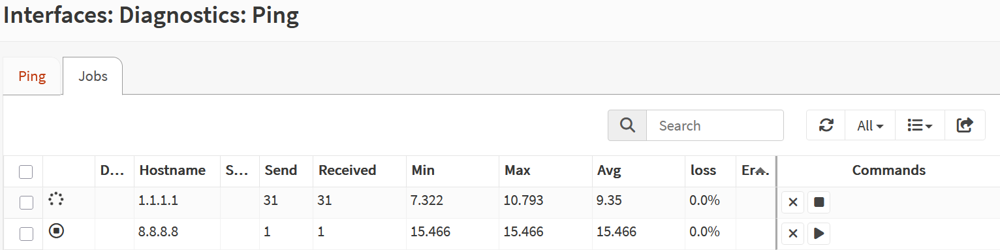
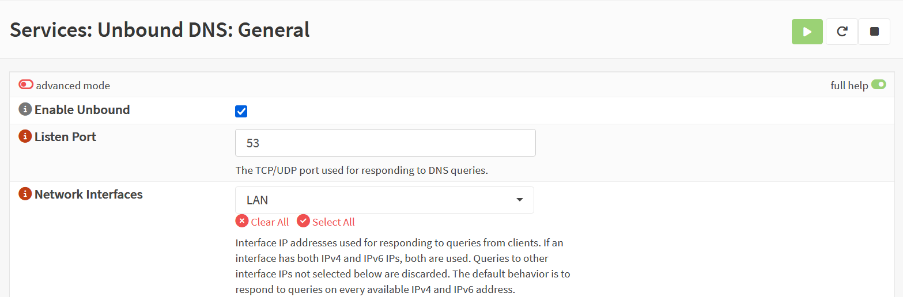
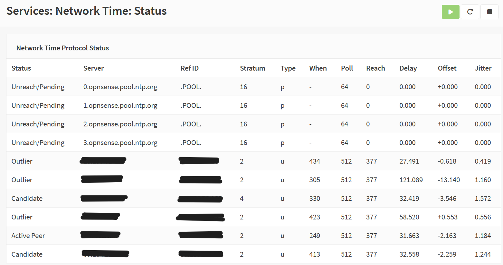
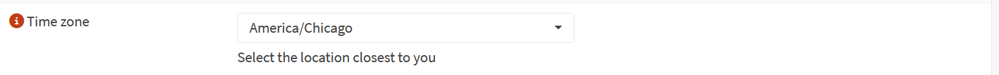

Ensure reliable DNS resolution and accurate time synchronization before applying security policies.
Tools Used
OPNsense Firewall
Unbound DNS Resolver
System Time Sync (NTP)
Diagnostics: DNS Lookup, Ping, NTP Status
Steps Taken
Verified DNS resolution using Diagnostics → DNS Lookup (queried microsoft.com).
Confirmed upstream DNS servers were reachable via Diagnostics → Ping.
Ensured Unbound DNS Resolver was active and listening on LAN.
Checked System → Settings → General for correct DNS server entries.
Validated NTP sync via System → Settings → Time and Diagnostics → NTP Status.
Confirmed system time was accurate and synchronized with upstream NTP servers.
Screenshot: DNS Lookup

Click to view full-size: DNS resolution confirmed for microsoft.com.
Screenshot: Ping to DNS Server

Click to view full-size: Upstream DNS server reachable via ICMP.
Screenshot: Unbound DNS Status

Click to view full-size: Unbound DNS Resolver active and listening on LAN.
Screenshot: NTP Sync Status

Click to view full-size: System time synchronized with upstream NTP server.
Screenshot: System Time Settings

Click to view full-size: Timezone and NTP sync source configured correctly.
Outcome
DNS resolution and time synchronization validated successfully. Firewall is now ready for policy enforcement, logging, and audit-ready operations. This step ensures that all future security events are timestamped accurately and that upstream services are reachable.